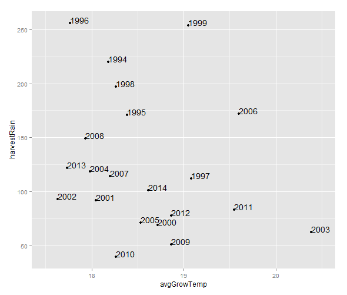
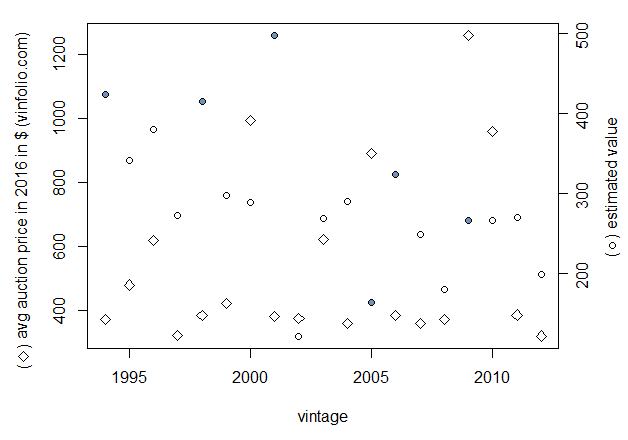

Plot 1 shows favourable years for wines in the Bordeaux region. Low amount of rain during the harvest period (in mm) and high average temperatures (in degrees Celsius) throughout the growth season are deemed favourable for wine quality. For instance, year 2010 appears and indeed was a good year.
Plot2 illustrates some discrepancies between the average auction price and the value assigned to the vintage by the model (the values are not directly comparable). On the left scale there is the price in US dollars for a recent auction (diamonds), whereas on the right side there is the scale for the models predictions (circles). Blue circles show the points where the prices and the estimates of value rather disagree. This may be due to some unreliability in the data (it may include cheaper wine and conflate the average price and the quantity of sales -- this information was no available) and due to some sensitivity of the model (which however was shown to work well with Bordeaux wines). Another potential source of error is the climate data. We wish to investigate these issues in the future using larger data sets and perhaps apply the same approach to different commodity markets.
